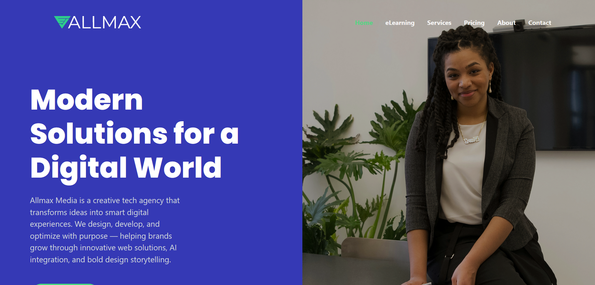
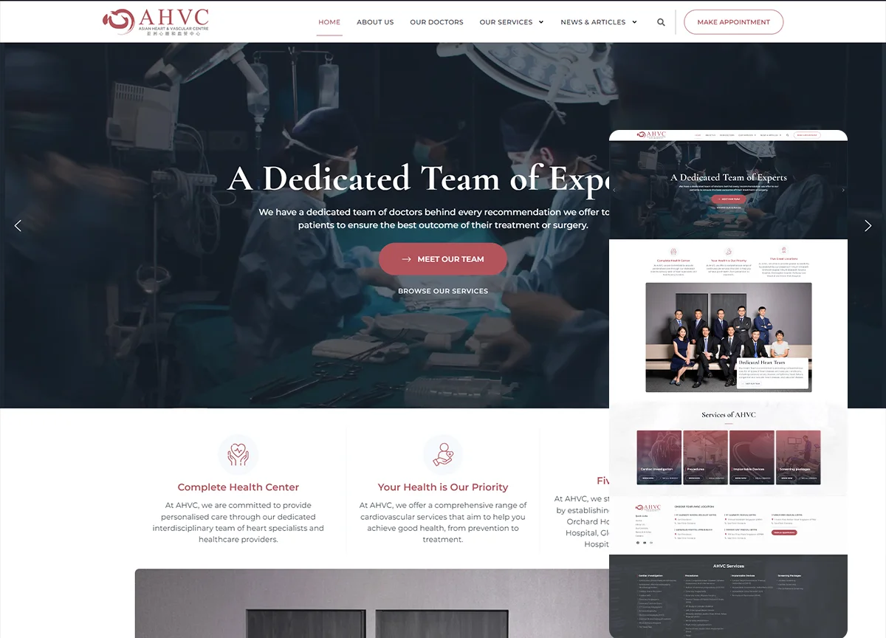
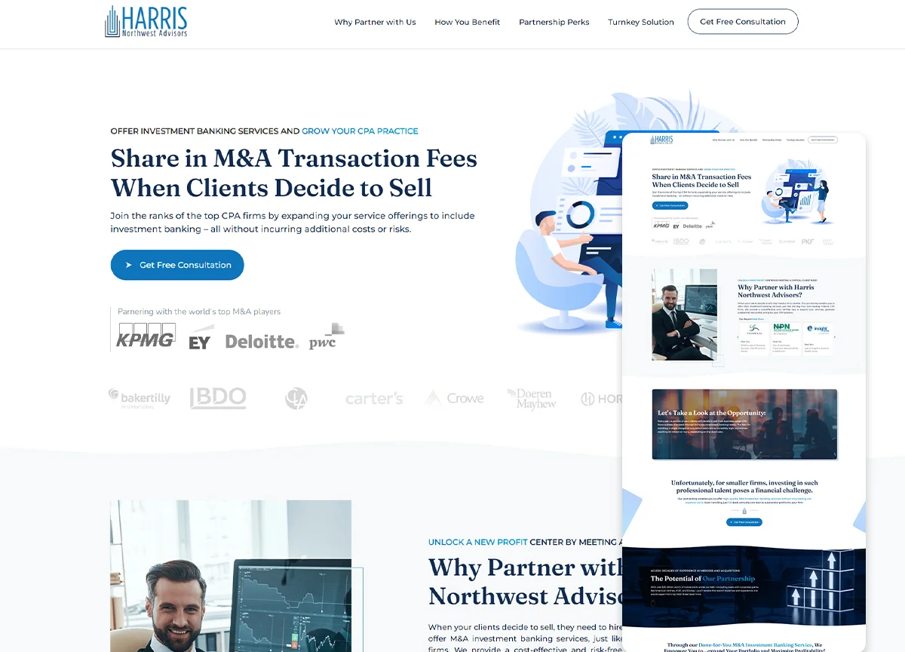
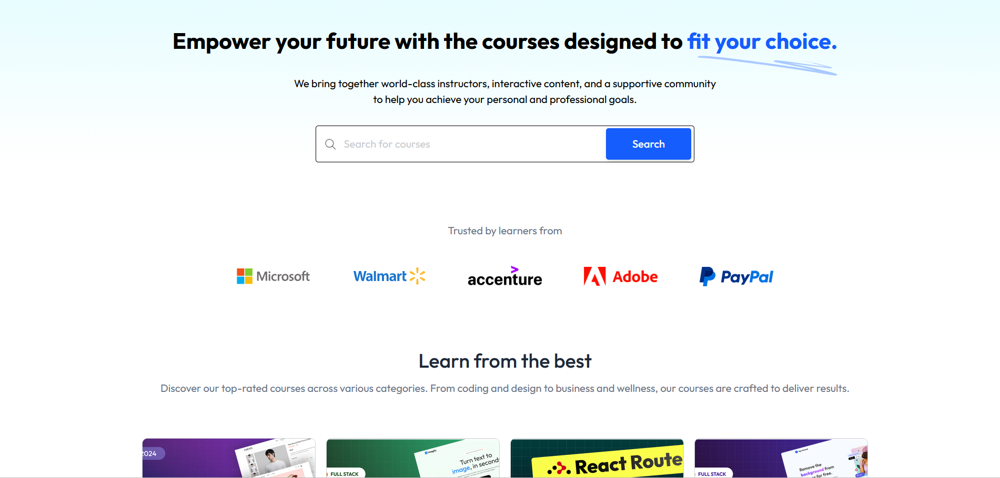
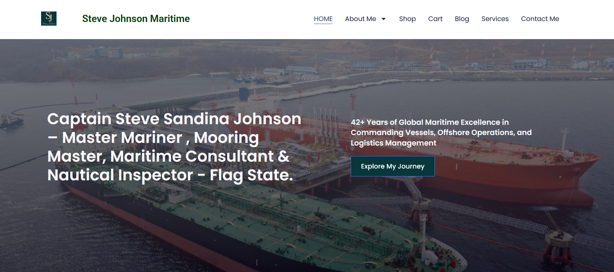
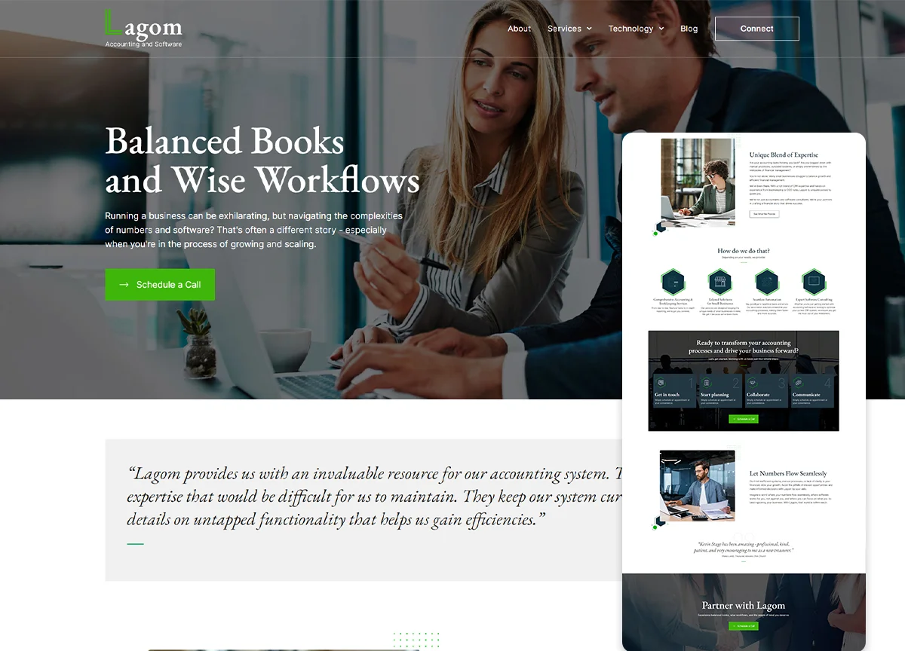
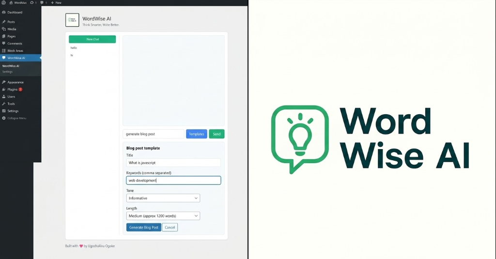

My Expertise
“Sometimes the best way to solve a technical problem is to understand the human system behind it.”
My Work
Deployed scalable web applications, healthcare clinics, maritime portals, and AI-powered systems using React, Node.js, and WordPress. Delivered custom digital platforms with clean code, fast performance, and measurable business impact.

Altramax Media Website
Creative media agency platform and content management system showcasing media assets, campaign blog posts, and interactive brand components.

AHVC Heart & Vascular Clinic
A comprehensive medical clinic web platform featuring patient resource libraries, doctor credentials, and HIPAA-conscious appointment scheduling.

Harris Northwest Advisors
High-conversion web presence for a premier boutique M&A advisory firm, optimized for CRO, executive lead generation, and institutional credibility.

Altramax Learn Platform — AI-Powered LMS Hub
An end-to-end learning management system featuring dynamic multi-currency course enrollment, video streaming, and an automated Google Gemini AI quiz generator that formulates contextual assessments with an 80% passing threshold for automatic verifiable certificate generation.

Captain Steve Maritime Portfolio
Maritime professional portfolio showcasing commercial vessel command operations, offshore fleet project management, and specialized marine certifications.

Lagom Architectural Showcase
Minimalist Scandinavian spatial design portfolio showcasing architectural renderings, fluid grid layouts, and refined typographic rhythm.

WordWise AI — Editorial Assistant
A ChatGPT-style WordPress plugin powered by Google Gemini API, designed to help content creators write smarter inside the Gutenberg block editor with SEO meta generation and readability metrics.
Visual System Architecture & Interactive Lab
How I architect practical AI automation systems, document workflows, and productivity pipelines from ingestion to delivery.
AI Document Processing & Productivity Architecture
End-to-end automated flow from document ingestion to AI parsing, media synthesis, and multi-channel delivery
Document Ingestion
PDFs, briefs, drafts & media assetsAI Text Parsing
Claude Code & Gemini extractionDocument Editing
Refinement, summarization & cleanupMedia Generation
AI image & video synthesisWorkflow Automation
n8n triggers & app integrationsStructured Delivery
Structured output & high productivityResponsible AI Evaluation Tool
Evaluate an AI system under European AI Act and ethical governance principles. Adjust the 5 metric sliders to dynamically calculate the Trust Index:
Evaluated in alignment with the Responsible AI Framework in Ethics in Code: ensures system transparency, minimal bias, robust user controls, and regulatory auditability.
Note: The Trust Index is an experimental assessment framework for educational and engineering purposes. It is not a legal compliance certification or substitute for formal AI risk assessment.
Where I've Worked & Delivered
Demonstrated engineering ownership, real-world IT problem solving, and measurable outcomes.
Web Developer & IT Support Specialist @ Women's Aid Collective (WACOL)
2023 – Present- Managed organizational digital infrastructure and core web platforms supporting advocacy and community education.
- Conducted rigorous technical troubleshooting, resolving 95% of IT issues within 24 hours to maximize operational uptime.
- Optimized platform SEO architecture and responsive interfaces, boosting organic user reach and digital engagement by 30–40%.
- Implemented security best practices, automated backup schedules, and ensured compliance with digital privacy standards.
Founder & Technical Director @ Altramax Media & Altramax Learn
2023 – Present- Architected, developed, and deployed the Altramax Learn digital education platform using React, Node.js, and MongoDB.
- Engineered the AI-powered quiz assessment microservice with Google Gemini, automating question generation and certificate logic.
- Orchestrated Cloudinary media ingestion pipelines and integrated secure multi-currency payment workflows.
- Managed system operations, database modeling, UI/UX prototyping in Figma, and cloud hosting deployments.
Technical & Advocacy Consultant @ Women's Aid Collective (WACOL)
Sep 2023 – Feb 2024- Employed by WACOL (the executing NGO) on the governance initiative funded by the European Union and managed through the British Council.
- Mentored and coached 3 Civil Society Organizations on digital advocacy frameworks, rights-based technology use, and workflow efficiency.
- Assisted organizations in structuring digital engagement workflows, content strategies, and operational technology planning.
- Built institutional capacity for effective digital communication, stakeholder management, and policy influence.
Research & Data Team Lead @ Women's Aid Collective (WACOL)
May 2024 – June 2024- Served as WACOL staff directing the field research and data collection team on the Women's Voice and Leadership (WVL) project funded by ActionAid.
- Supervised multi-city field operations evaluating socioeconomic policy impacts and rights-based program outcomes across 4 major cities in Enugu State.
- Synthesized large quantitative and qualitative survey datasets into actionable analytical reports presented to partner agencies and government stakeholders.
- Ensured rigorous data integrity, ethical interview standards, and community-centered methodologies throughout field data collection.
Ethics in Code
My published work exploring the intersection of computer science, philosophy, and responsible AI governance.

Ethics in Code: A Framework for Modern Software & Responsible AI
Drawing on my background in philosophy and software engineering, Ethics in Code addresses one of the defining challenges of our era: how developers, architects, and institutions must design technology that serves humanity. It outlines practical guidelines for algorithmic fairness, explainability, user agency, and auditability under emerging frameworks like the EU AI Act.
Verified Credentials & Feedback
What leaders and clients have said, alongside certified professional training.
“When I asked Ugo to build a website for me I was impressed by how quickly he was able to get it done. His designs were modern, responsive, and impressive — far exceeding what I had experienced in the past.”
“Ugochukwu is an outstanding IT expert. He seems to know the answer to every technical challenge or provides a crystal-clear diagnostic path. Our dependable go-to person for IT solutions and system reliability.”
“Ugo is both a dedicated professional and a supportive partner. He not only mentored our organization on advocacy frameworks as required by the EU project, but he also enhanced our digital presence and assisted with publications.”
Generative AI Fundamentals (100% Score)
Issued September 2024Responsive Web Design Developer
300 hours curriculum • July 2023Essential Digital Skills Certification
Issued March 2023Have a project in mind or an engineering opportunity in Germany? Let's talk.
Open to Werkstudent, Junior Software Engineering, AI Automation and IT Support opportunities in Germany. Relocating to Germany in 2026.
Currently in Enugu, Nigeria • Relocating to Germany in 2026